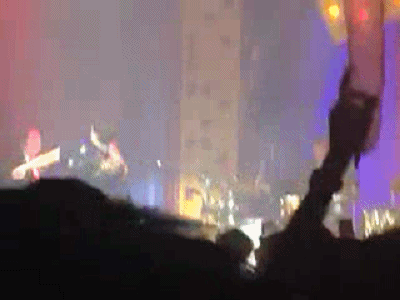

We All Love Mika | 0225 Live at Shanghai Part2
昨天发完Mika上海演唱会现场回顾的第一部分，有人或许会感到疑惑，为何在motss平台上用这么多篇幅推关于他的内容。
Mika是一名出色的歌者，他拥有着迷人的嗓音和唱腔；他同时是一位幸福的gay，他每次提起自己的男朋友时便是满脸的甜蜜。
直到去了现场亲眼见到他的表演时，你才能体会到他那种自然散发的随性、天真、积极和快乐，以及那种让你醉心于其中的极具诱惑的…骚气…
之前因为这是首法语歌所以没有仔细听过几遍，所以当Mika用中文说一颗心砰砰砰，一直到前奏响起来都没反应过来这是哪首歌（再次跪下）。唱到一半拿出一朵玫瑰，一边唱一边摇（不是摇玫瑰，是全身扭动带着玫瑰一起摇懂了吗！），再加上他比英语更好听的法语发音，略带一点小鼻音那样的，要被他的温柔苏死了啊啊啊啊QUQ后来间奏的时候加入了很重的鼓点，模仿心跳什么的，Mika就随着鼓点打响指，或者是Poping，一旦完全合上了鼓点就会露出得意的傲娇小表情，怎么会这么可爱啊啊啊啊啊！
这个好像大家都听得很多233（毕竟是主打），所以前奏一出来全场沸腾。配合有些忧郁的旋律灯光也变成了蓝色，然后某迷妹就和我说”Blue is the warmest color”，这确实也是一首抚慰人心的歌呀qvq几乎是全场全程一起合唱的，不管是”Where have the gay guys gone”还是”If we areall in the gutter, it doesn’t change who we are”虽然语气轻柔但是是很有力量的，那在这里也祝愿性少数群体能够越来越被接受，走到阳光下，让Where have all the good guys gone成为一个old question。
应该算是他比较早期的一首歌了吧，但是我听过并且可以跟着唱（骄傲脸）唱的时候有很多小动作，抚颈，翘个兰花指什么的（…）间奏的时候又（？）跟着音乐扭动身体，总是就是各种让人少女心炸裂！
唱这首的时候换了一身衣服，和专辑封面一个系列的那种。明明是首安慰人的歌，歌词却这么让人无奈”For there is nothing that we can do”。值得一提的是Mika跟着节奏跳的时候太激烈把麦给跳掉了2333一开始还想去捡回来，后来试了几次就放弃了，但是完全不影响他的发挥~
这里他把外套脱了，只有一件亮的反光的T恤（手臂肌肉prprprpr）。又是一首新专辑主打，又是一次全场大合唱，唱到一半跳了下来，坐到了观众前面的栏杆上，前面的人摸到了啊啊啊啊啊啊啊你们放开我男神啊啊啊啊好羡慕啊啊啊啊啊气die惹！
上一首一结束像是安排好了一样下面有人开始喊Lollipop。Mika在唱之前说不管他到哪里演出，都会有人举着黎巴嫩的国旗，然后楼上果然有人举着！（不禁想起他坎坷的童年经历，小忧桑了一把）他先唱了一段他在北京到上海的火车上写的曲子，唯一的歌词是污污污污污（x）然后就着这个曲子唱了一段Lollipop，后来他又边弹钢琴边唱，最后加入管乐，气氛简直达到最高点。
唱之前用中文念了几句歌词，“她教我跳舞但我不想跳哼”（傲娇XDDD），被打断了还用炒鸡可爱的语气说Fuck U（啊啊啊我没救了），然后是一大段法语……但这毕竟是一首法语歌，虽然听了很多遍依旧不会唱QUQ只会副歌一直不停重复的那一句，唱得开心了Mika跳上钢琴扭腿（秀腿长2333）跳下钢琴就把乐手一个个玩过来哈哈哈
